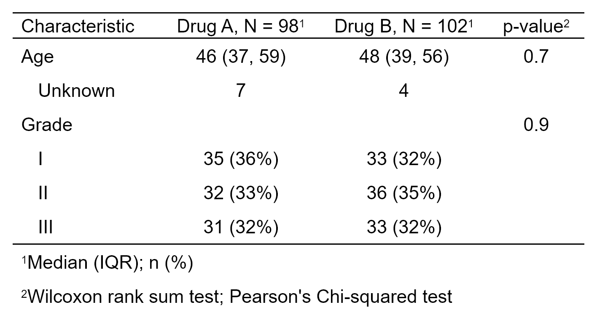

| as_flex_table {gtsummary} | R Documentation |
Function converts a gtsummary object to a flextable object. A user can use this function if they wish to add customized formatting available via the flextable functions. The flextable output is particularly useful when combined with R markdown with Word output, since the gt package does not support Word.
as_flex_table( x, include = everything(), return_calls = FALSE, strip_md_bold = TRUE )
x |
Object created by a function from the gtsummary package (e.g. tbl_summary or tbl_regression) |
include |
Commands to include in output. Input may be a vector of
quoted or unquoted names. tidyselect and gtsummary select helper
functions are also accepted.
Default is |
return_calls |
Logical. Default is |
strip_md_bold |
When TRUE, all double asterisk (markdown language for bold weight) in column labels and spanning headers are removed. |
A flextable object
The as_flex_table() functions converts the gtsummary object to a flextable,
and prints it with the following styling functions.
flextable::flextable()
flextable::set_header_labels() to set column labels
flextable::add_header_row(), if applicable, to set spanning column header
flextable::align() to set column alignment
flextable::padding() to indent variable levels
flextable::fontsize() to set font size
flextable::autofit() to estimate the column widths
flextable::footnote() to add table footnotes and source notes
flextable::bold() to bold cells in data frame
flextable::italic() to italicize cells in data frame
flextable::border() to set all border widths to 1
flextable::padding() to set consistent header padding
flextable::valign() to ensure label column is top-left justified
Any one of these commands may be omitted using the include= argument.
Pro tip: Use the flextable::width() function for exacting control over
column width after calling as_flex_table().
Example 1

Daniel D. Sjoberg
Other gtsummary output types:
as_gt(),
as_hux_table(),
as_kable_extra(),
as_kable(),
as_tibble.gtsummary()
if (requireNamespace("flextable"))
as_flex_table_ex1 <-
trial %>%
select(trt, age, grade) %>%
tbl_summary(by = trt) %>%
add_p() %>%
as_flex_table()